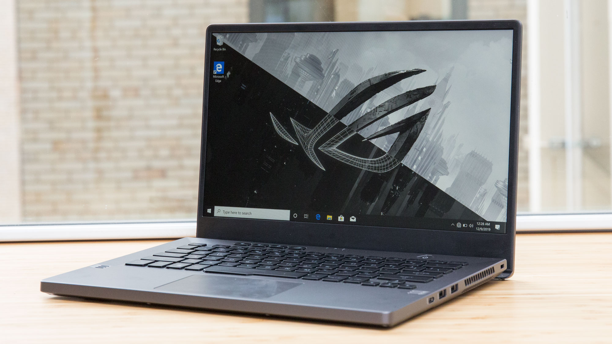

ASUS ROG Zephyrus G14
| Specificaties | |
|---|---|
| CPU | AMD Ryzen 7 4800HS |
| Memory | 16GB |
| Graphics | GeForce GTX 1660 Ti |
| Storage | 1TB |
| Screen | 1920x1080 (Full HD) |
| Price | €1499.00 |
Dat AMD met de Ryzen 4000-serie een fijne processor heeft gebouwd, wisten we al. Het blijkt eens te meer als we naar deze twee Zephyrus-laptops kijken en die vergelijken met de vorige generatie AMD-processors. Asus maakt voor deze laptops, voorlopig exclusief, gebruik van de HS-versie van de Ryzen-processors, met een tdp van 35 watt in plaats van de standaard 45 watt. De fabrikant heeft zijn laptops daardoor aardig dun weten te maken, maar je ziet het uiteraard terug in snelheid. Zeker bij langdurige belasting is een Ryzen 7 4800H sneller dan een Ryzen 9 4900HS of Ryzen 7 4800HS.
Die processors zijn prima matches met de videokaarten. Zware games zoals Far Cry 5 draaien soepel op Ultra-instellingen en full-hd-resolutie. Asus heeft schermen met een verversingssnelheid van 120 en 144Hz in de laptops gezet, maar helaas hebben ze beide langzame responstijden, die eerder bij een 60Hz-scherm horen. Een minpuntje aan het scherm van de G15 is dat het niet het volledige srgb-kleurbereik kan weergeven. Het is weliswaar een gamelaptop, dus we tillen niet te zwaar aan de kleurweergave, maar anderzijds is het een laptop van 1500 euro en de srgb-gamut is niet bepaald exotisch te noemen.
Ook aan de buitenkant vinden we de G14 beter gelukt dan de G15. Hij voelt wat steviger aan en heeft een veel fijner toetsenbord, met meer travel, en een touchpad met een glazen oppervlak die prettiger werkt dan die van de G15. Ook wat accuduur betreft is de G14 de betere koop, want die haalt zes en een half uur accuduur als je het rustig aan doet, tegenover drie en een half uur voor de G15. Voor een gamelaptop zien we een korte accuduur meer als een gegeven dan als een nadeel, maar als die accuduur toch langer uitvalt, is het mooi meegenomen.
Een kritiekpuntje dat op beide van toepassing is, is de webcam, of beter gezegd: het ontbreken ervan. Het is niet voor het eerst dat Asus die weglaat op een Zephyrus-laptop, maar tijdens een mondiale crisis waarbij iedereen moet thuiswerken, blijkt het ontbreken heel onhandig te zijn.
Welke van de twee zou je dan moeten kopen? Wat ons betreft is de G14 de beste. Toetsenbord, touchpad, scherm en accuduur zijn beter, maar hij is ook een stuk prijziger dan de G15. Pakken we de G14 met dezelfde videokaart als de G15 erbij, dan betaal je 1800 euro voor de G14 en 1500 euro voor de G15. Die prijs is toch al een lastig puntje, want waar laptops met AMD-processor voorheen de goedkope optie waren, zijn ze dat nu zeker niet. Er zijn namelijk al laptops met GTX 1660 Ti-videokaarten voor 850 euro en de goedkoopste met een Core i7-processor en 120Hz-scherm is 1200 euro. Dan heb je weliswaar twee cpu-cores minder, maar je betaalt ook 300 euro minder dan voor een G15, of 600 euro minder dan voor een G14. Anderzijds zijn dit de eerste laptops met AMD-processor die verkrijgbaar zijn, en de prijzen zullen wellicht nog wat dalen. Bovendien geldt voor de G14 dat het een vrij unieke laptop is, want er zijn nauwelijks 14"-notebooks te krijgen met een GTX 1660 Ti- of RTX 2060-videokaart en een snelle processor, en dat kost natuurlijk ook geld.
Het klinkt misschien een beetje raar, maar de Zephyrus'en zijn gamelaptops die we niet zouden kopen om op te gamen. Daarvoor zijn er alternatieven met dezelfde videokaart en Intel-cpu, die een stuk minder kosten en wellicht zelfs een scherm met snellere responstijden hebben. Wat deze laptops onderscheidt, is de Ryzen octocore-cpu en als je op zoek bent naar veel cpu-kracht en ook af en toe een spelletje wil spelen, dan is met name de G14 een interessante keuze.